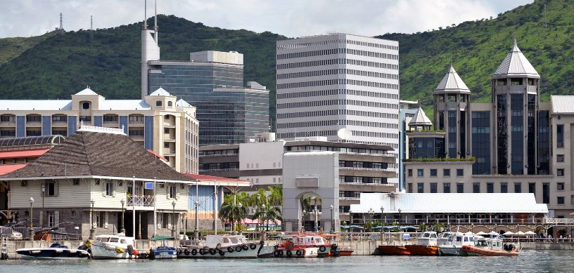

Mauritius is a small island nation located in the Indian Ocean on the east side of the coast of Africa. It enjoys a tropical climate with warm, sunny weather year-round, and its diverse culture blends influences from African, Indian, Chinese, and French traditions. The growing financial sector combined with the Mauritius presents an exceptional opportunity for aspiring finance professionals to develop their skills through an education here.
As Mauritius continues to position itself as a leading financial hub in Africa, students from around the globe can benefit significantly from a rising global financial player. The island’s evolving financial landscape, which includes a burgeoning banking sector, offshore finance services, and regional financial integration, offers students hands-on experience and a chance to engage with cutting-edge financial practices which gives the students an idea of what it means to compete with the best of the best in the financial world.
Why Study Finance in Mauritius?
- Growing Financial Sector: Mauritius has developed into a prominent financial hub in the Indian Ocean region, with a robust and growing financial services sector that includes banking, investment, and insurance.
- Strategic Location: Located at the crossroads of Africa and Asia, Mauritius serves as a gateway for businesses looking to enter these markets. This strategic location provides valuable insights and opportunities for finance professionals interested in international finance and global markets.
- Education Quality:Mauritius is home to reputable institutions offering finance programs that are often recognized internationally. These programs are designed to meet global standards, equipping students with the skills needed for a successful international career in finance.
- Cost-Effective Education:Compared to some Western countries, the cost of studying in Mauritius can be more affordable, offering a high-quality education at a lower cost.
- Multicultural Environment:The multicultural and multilingual environment in Mauritius provides a unique perspective on international finance, making it easier to understand and navigate global financial systems.
- Economic Stability and Growth:Mauritius has a stable and growing economy with a focus on innovation and development, which can provide a solid foundation for understanding financial markets and economic strategies.
- Lifestyle and Environment: Mauritius is known for its beautiful landscapes, pleasant climate, and high quality of life, making it an attractive location for students care about their personal well-being along with the quality of the education that they will recieve.
Top Universities in Mauritius to Pursue Finance
Here are some of the top universities to pursue a course in finance in Mauritius:
- University of Mauritius (UOM)
- Université des Mascareignes (UDM)
- Curtin Mauritius
- Mauritius Institute of Professional Finance (MIPF)
- Open University of Mauritius (OU)
What’s the Cost of Pursuing Finance in Mauritius?
At the University of Mauritius (UOM) and Open University of Mauritius (OU), undergraduate programs typically cost between MUR 30,000 to MUR 50,000 per year , while postgraduate programs range from MUR 50,000 to MUR 80,000 per year. In private institutions, undergraduate and postgraduate programs generally cost between MUR 1,50,0000 and MUR 550,000 per year, with the cost of professional finance qualifications ranging from MUR 20,000 to MUR 50,000 per year. The total living expenses including rent, utilities, conveyance will come around to approximately MUR 16,000 per month.
Job Opportunities after Studying Finance In Mauritius
- Banking: Banking involves retail banking which focuses on individual customer satisfaction and the management of personal and business accounts and investment banking which focuses on providing services related to raising capital, advising on mergers and acquisitions, and offering financial and strategic guidance to corporations, governments, and other large institutions.
- Wealth Management: Financial planners help individuals with investment strategies and retirement planning to achieve their financial goals and wealth managers advise high-net-worth clients on complex financial matters and investment opportunities.
- Accounting: Public accountants provide services such as auditing and tax consulting for various clients. Corporate accountants manage the internal financial processes of a company ensuring accuracy and compliance with all the local and international regulations.
- Consulting: Management consultants advise companies on improving financial strategies and operational efficiency. Financial consultants specialize in financial modeling and strategic planning to enhance the business performance of the company they are working for.
- Financial Technology (FinTech): Blending finance and technology, product managers in FinTech develop and oversee financial technology products to meet market needs. Regulation and Compliance: Compliance officers ensure financial institutions follow laws and regulations to avoid legal issues.
- International Opportunities: Additionally your finance background in a dynamic financial environment like Mauritius can open doors in major financial centers worldwide.
FAQs:
Q: Are there programs specifically designed for international students?
Yes, many universities in Mauritius offer finance programs with international students in mind which would include courses that are taught entirrely in English.
Q: What is the cultural experience like for international students in Mauritius?
Mauritius is known for its multicultural environment which is blend of African, Indian, Chinese, and French cultures due to varied colonial history. Students can enjoy diverse festivals, cuisine, and cultural events while experiencing the island's natural beauty and warm hospitality.
For further assistance or queries students can contact us, Edwise International and avail our wide range of services for students on destinations like study in UK,study in USA, study in Canada, study in Australia, study in New-Zealand, study in Singapore, study in Ireland and many other countries.